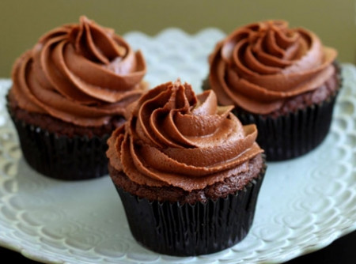
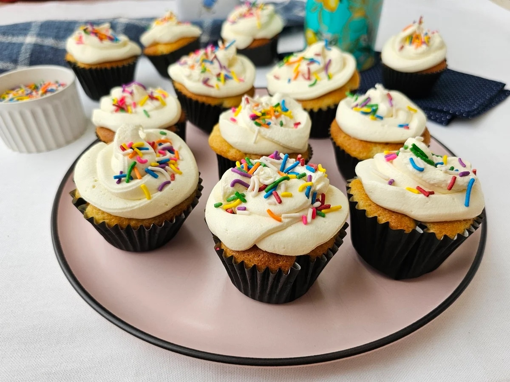

O sabor que transforma o seu dia
Os melhores cupcakes artesanais da cidade, feitos com ingredientes frescos e muito carinho.
Ver Cardápio CompletoNossos Sabores Mais Pedidos
Brownie
Massa de chocolate intensa com pedaços de brownie e cobertura de doce de leite.

Nutella
Massa de baunilha fofinha com um recheio generoso de Nutella e topo de avelãs.

Tradicional
O clássico bolo de baunilha com cobertura de brigadeiro e granulado colorido.
Como Funciona?
1. Receba em Casa
Escolha seus sabores favoritos no nosso cardápio online e receba no conforto da sua casa.
2. Retire na Loja
Faça seu pedido pelo site e agende um horário para retirar diretamente em nossa loja.